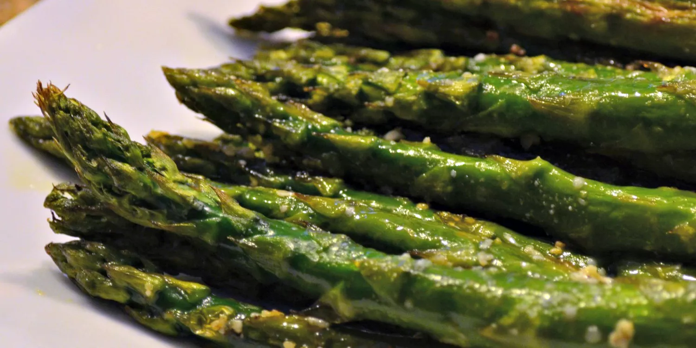
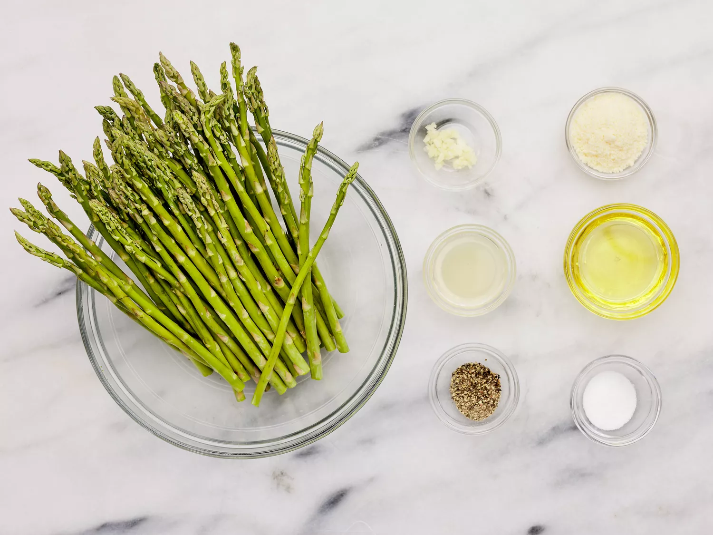

Roasted asparagus seasoned with garlic, lemon, and Parmesan cheese. This recipe is super quick to prep and roasting removes any bitterness. Try it next to lamb or grilled fish.
This roasted asparagus recipe is incredibly popular among Allrecipes community members — and for good reason! It’s easy, customizable, and absolutely delicious.
You'll find a detailed ingredient list and step-by-step instructions in the recipe below, but let's go over the basics:
The quickest and easiest way to trim your asparagus is to line up all the (clean) stalks on a cutting board, then use a sharp chef’s knife to cut off the thick ends. That’s all there is to it! If you’re worried about cutting at the wrong place, here’s a tip from recipe creator swedishmilk: “To remove woody ends, grab a stalk of asparagus at either end and bend until it snaps. It will naturally snap where it starts to get tough.”
This asparagus is simply seasoned with fresh garlic, sea salt, and black pepper. Parmesan cheese and fresh lemon juice also lend tons of flavor. This is a versatile recipe, so feel free to add spices and customize the seasonings to suit your taste.
Roasting asparagus couldn’t be easier: Toss the asparagus with olive oil and sprinkle it with cheese and seasonings. Arrange the stalks in a single layer in a baking dish, then bake until tender. Sprinkle the roasted asparagus with lemon juice before serving, if you like.
In an oven preheated to 425 degrees F, the asparagus should be perfectly roasted after about 12 to 15 minutes.
“This is probably the way I cook asparagus most often,” says culinary producer and test kitchen expert Nicole McLaughlin. “It’s so easy, comes together in one pan, and has so much flavor.” Here are a few of Nicole’s top tips for roasting asparagus perfectly every time:
Though Nicole opts for meatier asparagus stalks for grilling, she prefers thinner stalks for roasting — the skinnier ones tend to crisp up better. Choose asparagus that is firm, but has a bit of give. Also, make sure to cut off the woody ends. “You don’t want these overlapping or crowding the pan,” Nicole says of the oiled and seasoned asparagus stalks. “Because then they’ll end up steaming and you won’t get all that color.”Recipe creator swedishmilk suggests serving this roasted asparagus recipe with lamb or grilled fish – but it would also pair well with chicken, steak, or pork. If you’re looking for an entrée to serve with this delicious side dish:
This roasted asparagus will taste best the day it’s cooked. However, if you have leftovers, you can store them in an airtight container in the refrigerator for up to three days.
“I used lemon-infused oil and it was delicious,” raves Kim. “Even my friends who aren't fond of asparagus were impressed.”
“Came out delicious and so easy,” according to cathcartflo. “I made a Hollandaise sauce to go with it and loved it.”
“Really easy to do,” says one Allrecipes community member. “I paired this with baked salmon and was able to cook both in the oven, together, at the specified temperature and time in this recipe and both tasted great!”
Editorial contributions by Corey Williams.
Gather all ingredients. Preheat the oven to 425 degrees F (220 degrees C).
Place asparagus into a mixing bowl; drizzle with olive oil and toss to coat.
Sprinkle with Parmesan cheese and garlic; season to taste with salt and pepper if using. Arrange asparagus in a single layer in a baking dish.
Bake in the preheated oven until just tender, 12 to 15 minutes depending on thickness. Sprinkle with lemon juice just before serving.